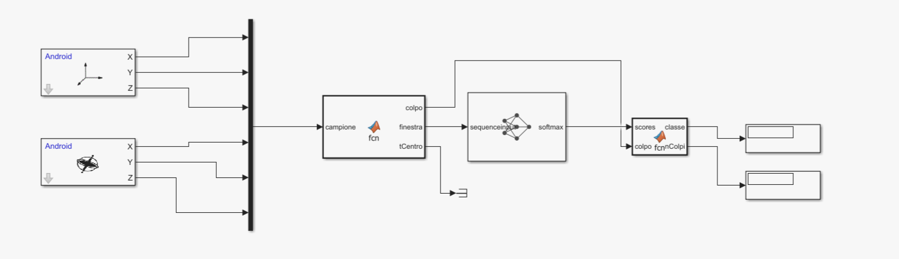

Progetto · Concluso · Rifatto da solo
Riconoscimento dei gesti della mano effettuati durante il gioco del ping-pong
Progetto di gruppo del corso di Automazione e Sicurezza (UCBM, 2024), poi rifatto da zero da solo nel 2026. L’obiettivo è riconoscere il colpo di un giocatore di ping-pong dai sensori di uno smartphone al polso. La versione originale superava il 98 % offline ma scendeva al 40 % sul telefono. Nel rifacimento ho cercato le cause di quel crollo e ricostruito la pipeline perché addestramento e uso reale fossero identici: oggi il sistema riconosce il 95,5 % dei colpi di persone mai viste e il 91,7 % in un test dal vivo sul telefono.

Scheda tecnica
| Origine | Progetto di gruppo (4 persone), UCBM 2024; mio contributo: reti neurali e modello Simulink |
|---|---|
| Rifacimento | 2026, da solo: pipeline, rete, rilevatore in tempo reale e app |
| Sensori | Accelerometro e giroscopio di uno smartphone al polso · 6 canali · circa 50 Hz reali |
| Dataset | 11 soggetti · 5 registrazioni da 60 s per colpo · 4710 finestre |
| Classi | Servizio · top spin di dritto · top spin di rovescio |
| Finestra | 1 s centrato sul colpo (50 campioni × 6 canali) |
| Modello | Rete convoluzionale 1D · 11.683 parametri |
| Validazione | Per soggetto: 7 persone in addestramento, 2 in validazione, 2 in test |
| Accuratezza offline | 95,5 % su persone mai viste (originale: 98,2 % con validazione falsata) |
| Accuratezza dal vivo | 91,7 % sul telefono, 55 colpi su 60 (originale: 40 %) |
Sfide e strategie
Dati sbagliati prima ancora del modello
Prima di toccare la rete ho controllato i dati. Confrontando ogni registrazione con tutte le altre è emerso che la classe «mano ferma» era una copia esatta del rovescio e che un file era duplicato: la rete stava imparando a separare due copie degli stessi dati. Inoltre i file contenevano 400 righe al secondo, ma il sensore forniva circa 50 valori al secondo, ripetuti: le finestre «da 2 s a 400 Hz» avevano circa 100 valori veri su 800. Ho escluso la classe copiata, lasciando decidere il «nessun colpo» al rilevatore, e portato tutta la pipeline a 50 Hz, la frequenza reale del telefono.
Trovare i colpi in segnali molto diversi
L’ampiezza dei colpi cambia molto tra persone e anche tra registrazioni della stessa persona: una soglia fissa trovava tutti i colpi in un caso e nessuno in un altro. I colpi vengono cercati sul modulo dell’accelerazione, che non dipende da come è orientato il telefono, con una soglia che si adatta al segnale: 2 volte la mediana, che misura il livello tra un colpo e l’altro. Un controllo automatico sul ritmo dei colpi segnala colpi persi e falsi picchi, e i falsi picchi vengono tolti.
Una validazione onesta
Nel progetto originale le finestre erano divise a caso tra addestramento e test, quindi le stesse persone comparivano in entrambi: il 98 % non misurava la capacità di riconoscere un giocatore nuovo. Ora i dati sono divisi per soggetto (7 persone per l’addestramento, 2 per la validazione, 2 per il test) e anche la normalizzazione usa solo le statistiche dell’addestramento. Sulle due persone di test la rete riconosce il 95,5 % dei colpi: meno del 98 % originale, ma è un numero che corrisponde all’uso reale.
Una rete che non dipende dalla posizione
La rete feed-forward originale riceveva la finestra appiattita in 4800 valori, legando ogni ingresso a un istante preciso: un colpo spostato nel tempo era per lei un ingresso mai visto. Ho usato una rete convoluzionale 1D, i cui filtri riconoscono una forma ovunque si trovi nella finestra, con 11.683 parametri, meno della metà del solo primo strato della rete originale. Gli errori rimasti sono tra servizio e dritto, i due gesti più simili; il rovescio è sempre riconosciuto.
La stessa elaborazione offline e in tempo reale
Nel progetto originale offline le finestre erano centrate sul colpo e filtrate sull’intera registrazione, mentre sul telefono il segnale veniva tagliato in blocchi fissi di 2 s e filtrato blocco per blocco: dal vivo la rete vedeva un segnale diverso. Ora il filtro è causale e una funzione MATLAB elabora un campione alla volta: lo filtra appena arriva, lo aggiunge a un buffer degli ultimi 50 e, quando il campione centrale è un colpo, passa il buffer alla rete come finestra, centrata esattamente come in addestramento. L’ho confrontata pezzo per pezzo con la versione offline su registrazioni intere: stessi colpi, stesse classi.
Dal PC al telefono
La funzione e la rete sono state inserite in un modello Simulink, verificato prima sul PC riproducendo una registrazione a 50 Hz e poi compilato in un’app Android. L’app legge accelerometro e giroscopio e mostra la classe di ogni colpo circa mezzo secondo dopo il colpo. In un test dal vivo, con 20 colpi per classe, ha riconosciuto 55 colpi su 60 (91,7 %): servizio e dritto 90 %, rovescio 95 %. È una sola sessione fatta da me, quindi non è ancora un’accuratezza generale: mancano prove su altri giocatori.
Report
Report tecnico completo, in inglese: ogni problema incontrato, le scelte fatte e le verifiche. Il codice MATLAB è disponibile su GitHub.